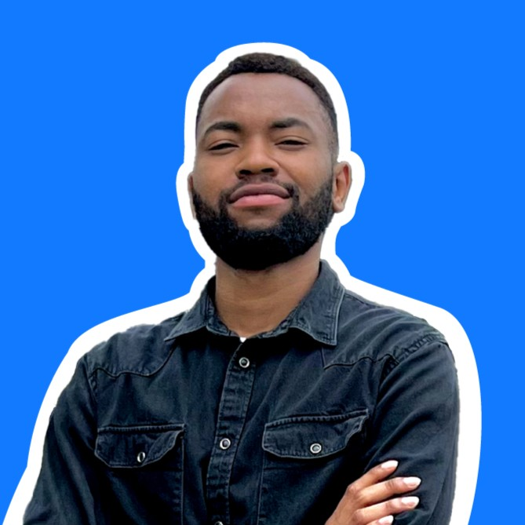

Hi, I'm David Adewale with the Trainee ID of 33644
I am a freelance front-end developer and UXUI designer. I started my
career as a graphics designer and transitioned into a web design and
development. I am a life long learner and a deeply curious mind.
Want to know more about me?
Visit my portfolio
or my
GitHub repository
Why did I join CWW Tech Africa?
I am a self-taught designer and developer with a passion for learning and creating. I am eager to connect with other developers and learn from their experiences. I am also excited to put myself out there and take advantage of the opportunities that CWW Africa has to offer. My goal is to stand out, make a great impression, and help my colleagues. I am confident that I can achieve these goals and launch my career in tech. ✨✨
What I'm up to:
- 🔭 I'm currently working as a freelance developer
- 🌱 I'm currently learning React
- 👯 I'm looking to collaborate on challenging projects
- 💬 I'm helping people understand JavaScript, React and Tailwind (which in turn helps me understand it better)
- 🚀 I will become a MERN stack developer by the end of 2023.
My recent projects:
- Dronic Smart Plugs: I helped Dronic Smart Plugs, a Lebanese startup company, bring their vision to life with a sleek logo, vibrant colors, and an easy-to-use online shop.
- Pented Website: As an apprentice for a Dubai-based startup, I redesigned and built the website of Pented. My work was praised by the company's CEO and senior designers at Microsoft and Meta.
- TravelXpressNg: I am currently designing and building the website for TravelXpressNg - a travel company in Nigeria.